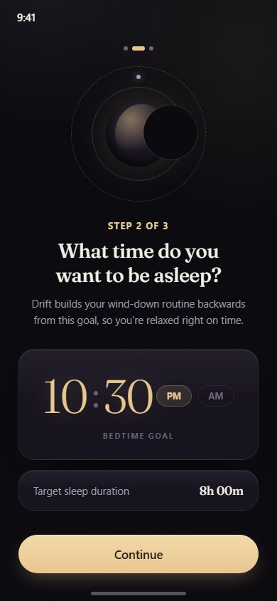
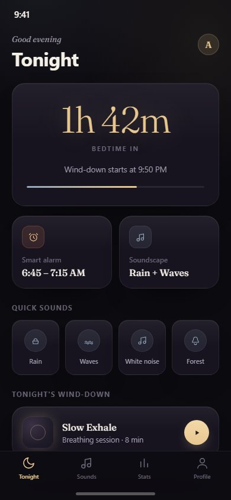
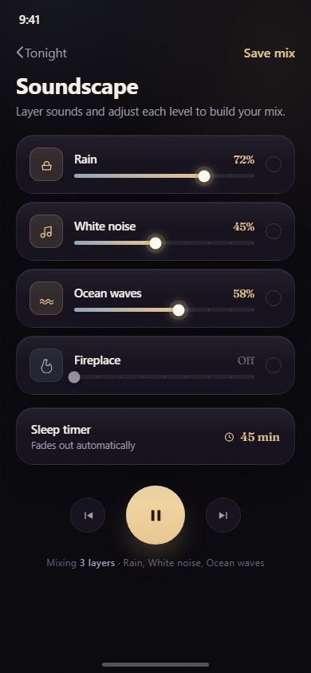
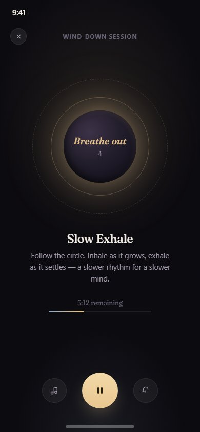
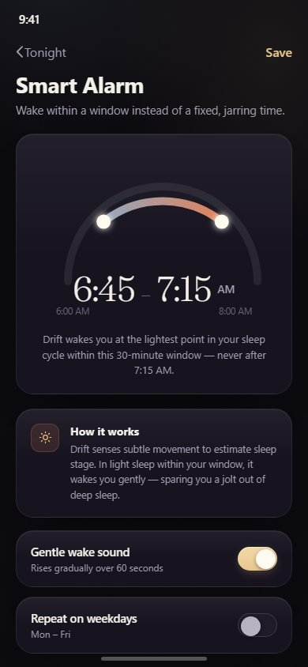
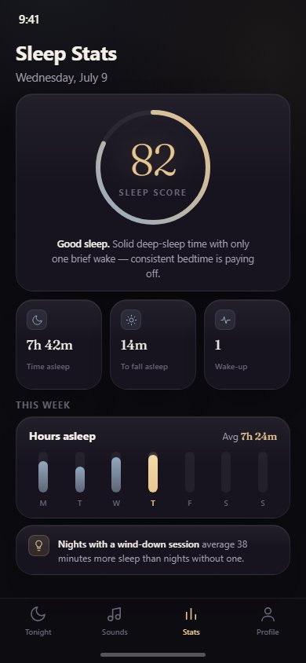

Falling asleep is hard, and most sleep apps only help you measure that fact rather than fix it — they log data but don't actually calm anyone down. Worse, a fixed-time alarm undoes whatever good sleep you did get: waking up mid deep-sleep-cycle at a rigid 7:00 AM leaves you groggier than waking a few minutes later at a naturally lighter point in the cycle. Drift is a concept for an iOS sleep and wind-down app built around two ideas: actively help someone relax into sleep (not just track it), and wake them gently within a window instead of jolting them awake at a fixed second.
A single, calm question — what time do you want to be asleep — sets the bedtime goal Drift builds everything else around. A fine-line orbit diagram stands in for the expected soft gradient blob, large serif time digits make the goal itself feel considered rather than a form field, and one primary action replaces the dense multi-screen setup flows most wellness apps open with.

The nightly home base: a countdown to bedtime rendered as the screen's hero number, the smart alarm window and current soundscape at a glance, one-tap sound shortcuts, and tonight's suggested wind-down session. Everything a person needs before bed is reachable without digging into settings.

This is one of Drift's two hallmark features, and it's treated as one: channel strips with tick-marked rails, glowing gradient-filled thumbs, and a gold-lit transport section give it the feel of a real hardware mixer rather than a stack of default range inputs. Users layer multiple sounds — rain, white noise, ocean waves, fireplace — and balance each one's level independently. A sleep timer fades the mix out automatically so it doesn't play all night.

A full-screen guided breathing session built around a single bloom-lit orb in a field of negative space — concentric rings, layered glow, and an italic serif breath cue ("Breathe out") replace anything that reads as UI chrome. The interface intentionally has almost nothing to read or decide during the session — the point is to disengage, not to manage more controls.

The other hallmark feature, and the screen built to prove the point: the wake window isn't two plain time pickers, it's drawn as an arc gauge, with a steel-to-dawn gradient segment marking the 6:45–7:15 AM window against the full 6–8 AM range and the times themselves set in large ultra-light serif digits. A dedicated explainer card spells out the mechanism in plain language — Drift wakes you at the lightest point in your sleep cycle inside that window, never later than the window's end — so the value of the feature is understood, not just implied by a nice-looking control.

The sleep score is the actual hero of this screen: a large glowing serif numeral inside a thin steel-to-gold gauge ring, not a small icon-sized badge. Supporting numbers (time asleep, time to fall asleep, wake-ups) and a simple seven-day bar trend stay deliberately quiet by comparison. One correlational insight at the bottom — nights with a wind-down session average more sleep — ties the stats back to the app's actual behavior-change features instead of leaving them as passive logging.

prefers-reduced-motion exists for. In the real product this would degrade to a static, pulse-free orb with a text/haptic breath cue (“Breathe out · 4”) instead of a moving shape, and the sleep-score ring, arc gauge, and progress bars would render in their final state instantly rather than animating in. None of the premium feel here depends on motion — the glow, gradient, and grain treatments are all static, so the reduced-motion version loses nothing but the breathing pace itself.